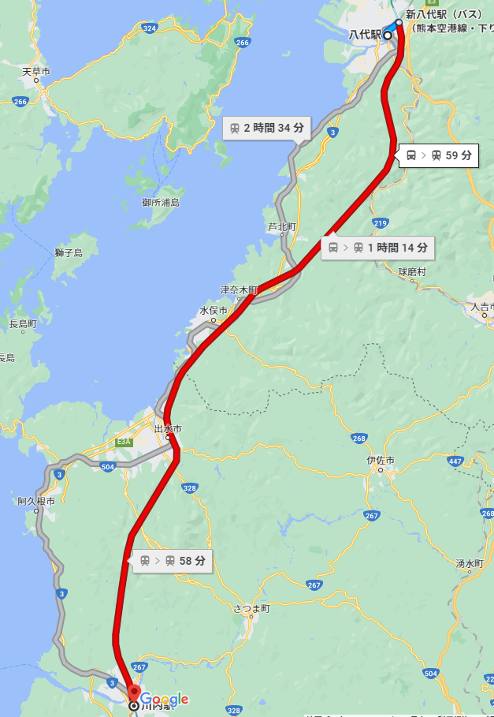
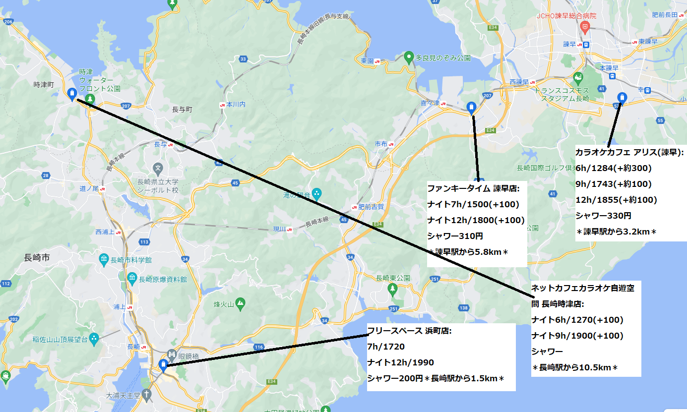

始発から終電の乗り通しである。
九州電車自転車旅
リンク集
ページ構成(リンク)
- 1. 九州電車自転車旅 行程
- 2. 九州電車自転車旅 詳細計画
- 20日( 1): [名古屋→大阪→広島→博多→熊本](18きっぷ)
- 21日( 2): 熊本→[八代→(薩摩おれんじ鉄道1dayパス 1500円)→川内]→鹿児島中央
- 22日( 3): 鹿児島中央→都城→宮崎
- 23日( 4): 宮崎→延岡→佐伯
- 24日( 5): 佐伯→大分→別府
- 25日( 6): [大分→由布院→久留米→鳥栖→肥前山口→諫早→長崎](18きっぷ)
- 26日( 7): [長崎→大村→佐世保→早岐→有田→(松浦鉄道)→伊万里→唐津]
- 27日( 8): [唐津→姪浜→博多]→小倉(→下関)
- 28日( 9): [小倉→下関→(山陰本線)→萩→出雲市→松江→米子(→鳥取)](18きっぷ)
- 29日(10): [米子→鳥取→福知山→園部→京都→米原→大垣→名古屋](18きっぷ)
- 30日(11): 名古屋→豊橋
- 31日(12): [豊橋→飯田→岡谷→松本→長野](18きっぷ)
- 3. 各地観光情報まとめ
1. 九州電車自転車旅 行程
行程(簡易版)
20日( 1): [名古屋→大阪→広島→博多→熊本](18きっぷ)
21日( 2): 熊本→[八代→(薩摩おれんじ鉄道1dayパス 1500円)→川内]→鹿児島中央
22日( 3): 鹿児島中央→都城→宮崎
23日( 4): 宮崎→延岡→佐伯
24日( 5): 佐伯→大分→別府→大分
25日( 6): [大分→由布院→久留米→鳥栖→肥前山口→諫早→長崎](18きっぷ)
26日( 7): [長崎→大村→佐世保→早岐→有田→(松浦鉄道)→伊万里→唐津]
27日( 8): [唐津→姪浜→博多]→小倉(→下関)
28日( 9): [小倉→下関→(山陰本線)→萩→出雲市→松江→米子(→鳥取)](18きっぷ)
29日(10): [米子→鳥取→福知山→園部→京都→米原→大垣→名古屋](18きっぷ)
30日(11): 名古屋→豊橋
31日(12): [豊橋→飯田→岡谷→松本→長野](18きっぷ)
※括弧[]内の区間は鉄道での移動を想定している。それ以外は自転車。
※名古屋，豊橋は実家等拠点付近の代表駅を示している。
2. 九州電車自転車旅 詳細計画
20日( 1): [名古屋→大阪→広島→博多→熊本](18きっぷ)
熊本観光(夜)
熊本観光想定: 翌0:10～翌1:00
21日( 2): 熊本→[八代→(薩摩おれんじ鉄道1dayパス 1500円)→川内]→鹿児島
熊本→八代
熊本滞在想定: 7:00～12:00
熊本→八代自転車所要時間想定: 1時間50分
熊本→八代: 35.3km(国道3号，県道14号経由)
熊本→八代: 40.3km(国道3号経由)
[熊本→八代]: 760円，40分
八代→川内
八代滞在想定: 14:00～14:30
[八代→川内]: 肥薩おれんじ鉄道1dayパス/1500円

川内→鹿児島
川内滞在想定: 16:40～17:40
川内→鹿児島自転車所要時間想定: 2時間39分
川内→鹿児島: 50.6km(国道3号経由↑322m)
[川内→鹿児島中央]: 950円，52分
鹿児島観光(夜)
鹿児島観光想定: 20:40～翌0:00
22日( 3): 鹿児島→都城→宮崎
鹿児島観光(朝)
鹿児島滞在想定: 7:00～12:00
鹿児島→都城
鹿児島→都城自転車所要時間想定: 5時間58分
鹿児島→都城: 71km(国道10号，隼人付近で県道2号経由↑693m)
[鹿児島中央→都城]: 1500円，1時間35分
都城→宮崎
都城滞在想定: 17:30～17:50
都城→宮崎自転車所要時間想定: 3時間31分
都城→宮崎: 47.2km(国道269号経由↑290m)
[都城→宮崎]: 950円，1時間5分
宮崎観光(夜)
宮崎観光想定: 20:40～翌0:00
23日( 4): 宮崎→延岡→大分
宮崎観光(朝)
宮崎滞在想定: 7:00～12:00
宮崎→延岡
宮崎→延岡自転車所要時間想定: 4時間16分
宮崎→延岡: 88.1km(国道10号経由↑172m)
[宮崎→延岡]: 1680円，1時間40分
延岡→大分
延岡滞在想定: 16:10～16:30
延岡→大分自転車所要時間想定: 4時間28分
延岡→肥前大野(三重町駅): 54.8km(国道326号経由↑453m)
三重町→大分: 34.3km↑149m
[三重町→大分]: 760円，55分
延岡→佐伯(代替案)
延岡滞在想定: 16:10～16:30
延岡→佐伯自転車所要時間想定: 2時間57分
延岡→佐伯: 62.0km(国道10号経由↑322m)
延岡→佐伯: 69.4km(国道388号，県道37号経由↑763m)
[延岡→佐伯]: 1130円，1時間5分/ 特急にちりん: 1970円，1時間
佐伯→大分(代替案)
佐伯滞在想定: 19:20～19:30
佐伯→大分自転車所要時間想定: 4時間25分
佐伯→大分: 58.9km(国道10号経由↑254m)
[佐伯→大分]: 1310円，1時間28分
大分―別府
大分滞在想定: 21:00～21:30
大分―別府自転車所要時間想定: 53分
大分―別府: 12km(国道10号経由)
[大分―]: 280円，1時間28分
大分観光(夜)
大分滞在想定: 21:00～21:30
別府観光(夜)
別府滞在想定: 22:30～翌0:00
24日( 5): 大分→別府→大分(→由布院→大分)
大分観光(朝)
大分滞在想定: 7:00～11:00
大分―別府
大分―別府自転車所要時間想定: 53分
大分―別府: 12.0km(国道10号経由)
[大分―別府]: 280円，16分
別府観光(昼)
別府滞在想定: 11:00～17:00
大分―由布院
大分―由布院自転車所要時間想定: 2時間45分
大分―由布院: 41km(国道210号経由↑593m)
[大分―由布院]: 950円，1時間
25日( 6): [大分→由布院→久留米→鳥栖→肥前山口→諫早→長崎](18きっぷ)
大分→由布院→長崎
始発及び終電
終電早岐経由
普通に日豊本線・鹿児島本線・長崎本線経由で行くと，こうなる。これなら，由布院1352→大分1451着が終電となるため，由布院観光も容易である。→
早岐→佐世保: 230円
大分→佐世保(日豊本線・鹿児島本線・長崎本線経由)
由布院→豊後森→日田→長崎
久大本線は豊後森―日田間の本数が少ないため，1200円課金すれば，遅くに由布院を出ても長崎方面へと行ける。

鳥栖→長崎
鳥栖→長崎については，長崎本線を乗りとおす場合の終電は早くなる。一方，早岐経由であれば，比較的佐賀などに長く滞在できる。

大分→佐世保・鳥栖→大村

↑鳥栖→大村については，長崎までの終電よりはマシであるが，若干早め。
←大分→佐世保については，在来線でも十分に終電が遅いため，由布院などで観光する余裕ができる。
鳥栖→佐世保
鳥栖→佐世保については，終電が遅いため，比較的佐賀などに長く滞在できる。
大分→長崎(日豊本線・鹿児島本線・長崎本線経由)
普通に日豊本線・鹿児島本線・長崎本線経由で行くと，こうなる。
由布院観光(昼)
佐賀観光(昼)
長崎観光(夜)
長崎・諫早のネットカフェ
長崎 自遊空間 長崎時津店
長崎 フリースペース 浜町店
佐世保観光(夜)
佐世保のネットカフェ
大村観光(夜)
大村のネットカフェ
26日( 7): [長崎→大村→佐世保→早岐→有田→(松浦鉄道)→伊万里→唐津]
長崎観光(朝)
長崎観光想定: 7:00～12:00
諫早観光(昼)
長崎→佐世保
佐世保観光(昼)
佐世保観光想定: 14:00～17:00
佐世保→伊万里
有田・伊万里観光(夕)
有田・伊万里観光想定:
伊万里→唐津
唐津観光(夜)
唐津観光想定:
27日( 8): [唐津→姪浜→博多]→小倉(→下関)
唐津観光(朝)
唐津観光想定: 7:00～9:00
虹の松原
唐津→姪浜→博多
福岡観光(昼)
福岡観光想定: 9:30～14:00
福岡(博多)→北九州(小倉)
博多→小倉自転車所要時間想定: 3時間35分
博多→小倉: 66.0km(国道3号経由)
[博多→小倉]: 1310円，1時間22分
北九州観光(夕・夜)
北九州観光想定: 18:00～翌0:00
小倉→下関
下関観光(夜)
28日( 9): [小倉→下関→(山陰本線)→萩→出雲市→松江→米子(→鳥取)](18きっぷ)
下関観光(朝)
下関観光想定:
小倉→米子
萩観光(昼)
萩観光想定:
小倉→萩
東萩→米子
出雲観光(夜)
松江観光(夜)
米子観光(夜)
鳥取観光(夜)
29日(10): [米子→鳥取→福知山→園部→京都→米原→大垣→名古屋](18きっぷ)
米子観光(朝)
米子観光想定:
松江→鳥取→福知山→園部→京都→米原→名古屋(山陰本線経由)

松江→名古屋(山陰本線経由) 始発
松江→名古屋(山陰本線経由) 終電
京都観光(夕)
京都観光想定:
30日(11): 名古屋→豊橋
名古屋→豊橋
ページトップへ
31日(12): [豊橋→飯田→岡谷→松本→長野](18きっぷ)
豊橋→飯田→岡谷→松本→長野
ページトップへ
3. 各地観光情報
熊本 観光情報
八代 観光情報
川内 観光情報
鹿児島 観光情報
都城 観光情報
宮崎 観光情報
延岡 観光情報
大分 観光情報
別府 観光情報
湯布院 観光情報
久留米・鳥栖 観光情報
佐賀 観光情報
長崎 観光情報
佐世保 観光情報
有田・伊万里 観光情報
唐津 観光情報
福岡 観光情報
北九州 観光情報
下関 観光情報
萩 観光情報
出雲 観光情報
松江 観光情報
米子 観光情報
鳥取 観光情報
豊岡 観光情報
福知山 観光情報
京都 観光情報
岐阜 観光情報
名古屋 観光情報
ページトップへ